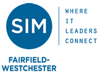

Executive briefings
Leadership sessions connect AI capability shifts to workflow redesign, human judgment, and organizational ownership.
Clients
A record of workshops, briefings, prompt-a-thons, talks, and applied workflow sessions from 2024 through 2026.
These engagements show where the ideas behind The T-W-O Project have already been translated into workshops, briefings, talks, and applied workflow sessions.
What this work looks like
Leadership sessions connect AI capability shifts to workflow redesign, human judgment, and organizational ownership.
Hands-on programs help participants map real business tasks and redesign AI-native workflows.
Public talks, professional sessions, and graduate teaching extend the framework into broader conversation and practice.
Selected engagements

Delivered a three-hour online workshop for MS and MBA students focused on workflow redesign for GenAI-enabled business work.

Delivered a series of internal sessions introducing AI-native workflows and practical workflow redesign for business teams.

Delivered a keynote and facilitated a half-day prompt-a-thon focused on applied GenAI use in business workflows.

Presented From AI-Enabled Analytics to AI-Native Organizations for IT leaders and CIOs, focusing on workflow and organizational implications.

Led a hands-on workshop with faculty, staff, and students on how generative AI changes tasks and why workflows need redesign.

Led a full-day workshop helping librarians apply GenAI to real work while keeping human judgment and workflow design visible.

Guided business faculty through a full-day GenAI workshop focused on workflow redesign and practical classroom application.
Archive
Additional talks, panels, and executive sessions that extend the ideas behind The T-W-O Project into public and leadership conversations.